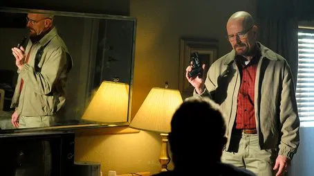
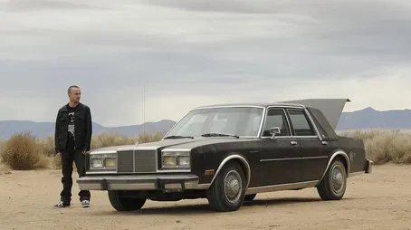
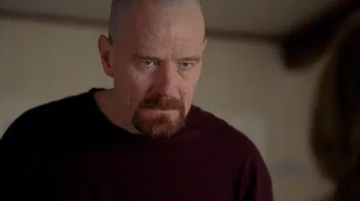
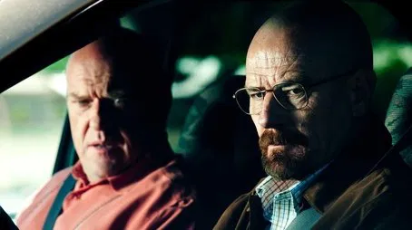
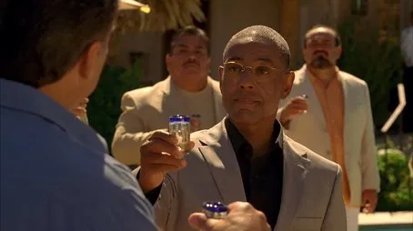
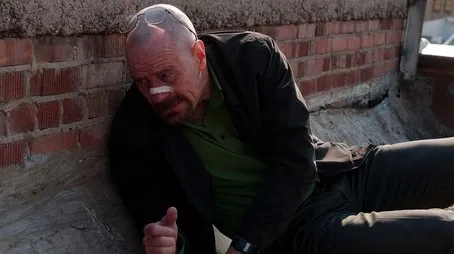

| Número |
Títol |
Descripció |
Imatge |
| 1 |
Box Cutter |
La tensió entre Walter i Gus arriba al límit després d’un incident violent al laboratori. Jesse i Walter han de gestionar les conseqüències d’aquesta nova amenaça. |
 |
| 2 |
Thirty-Eight Snub |
Walter compra una nova arma per protegir-se i consolidar la seva posició davant Gus. La desconfiança entre els socis de l’empresa de drogues creix. |
 |
| 3 |
Open House |
Skyler continua amb les seves maniobres per blanquejar diners i consolida el negoci amb Ted. Walter observa els esdeveniments des de l’ombra mentre planeja la seva pròxima jugada. |
 |
| 4 |
Bullet Points |
Walter i Jesse preparen un pla detallat per eliminar la competència i guanyar-se la confiança de Gus. Les tensions dins del laboratori continuen augmentant. |
 |
| 5 |
Shotgun |
Hank continua la seva investigació sobre el negoci de metanfetamina i es veu involucrat en situacions perilloses. Walter i Jesse fan moviments tàctics per protegir-se. |
 |
| 6 |
Cornered |
Walter comença a mostrar la seva nova personalitat més autoritària i calculadora. Gus detecta la necessitat de controlar completament la situació dins del laboratori. |
 |
| 7 |
Problem Dog |
Jesse lluita amb la seva consciència després de les morts recents i el seu vincle amb Walter es complica. Gus continua jugant amb la psicologia dels seus socis. |
 |
| 8 |
Hermanos |
Gus revela detalls del seu passat i mostra el seu pla mestre. Hank continua les seves investigacions i descobreix informació clau sobre el laboratori de metanfetamina. |
 |
| 9 |
Bug |
Walter sospita que algú està vigilant-lo i pren mesures per protegir el seu negoci i la seva família. Jesse comença a adonar-se de la manipulació a la qual està sotmès. |
 |
| 10 |
Salud |
Walter i Jesse viatgen a Mèxic per tancar un tracte important amb el càrtel. La situació es torna perillosa i requereix decisions immediates. |
 |
| 11 |
Crawl Space |
Walter descobreix que tot el seu pla es pot esfondrar en qualsevol moment. La paranoia i la tensió arriben a un punt crític. |
 |
| 12 |
End Times |
Walter es veu atrapat entre Gus i la seva pròpia família. Els plans es compliquen i la violència és imminent. |
 |
| 13 |
Face Off |
Clímax de la temporada: Walter i Jesse executen un pla per eliminar Gus. La tensió arriba al seu punt màxim i canvia per sempre el futur dels protagonistes. |
 |